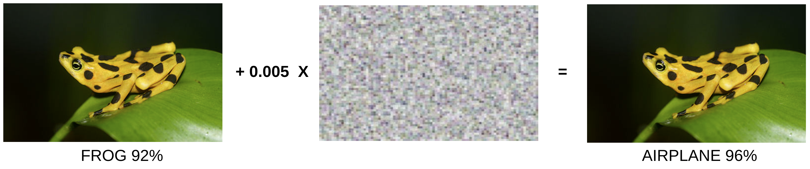
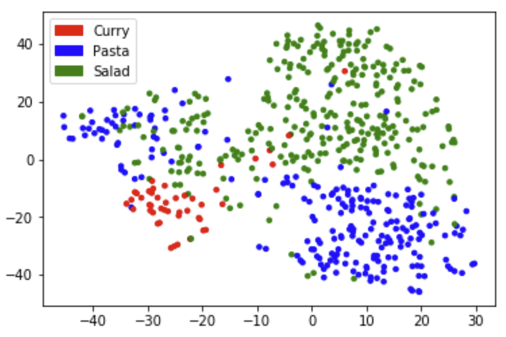
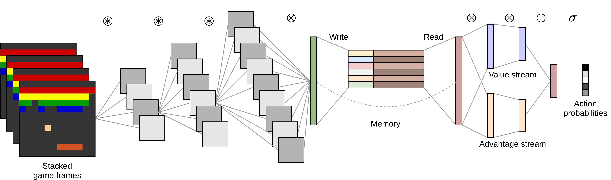
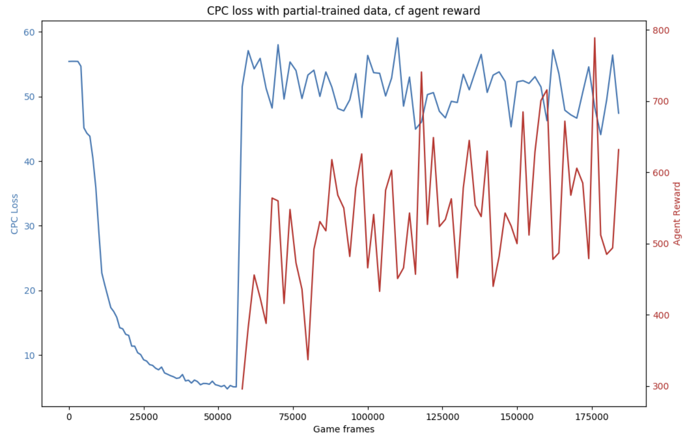
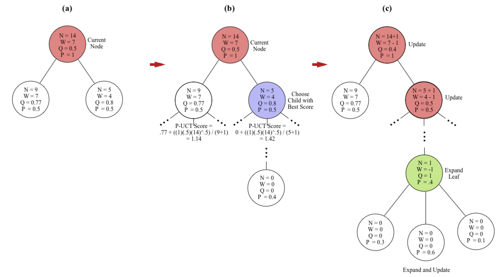
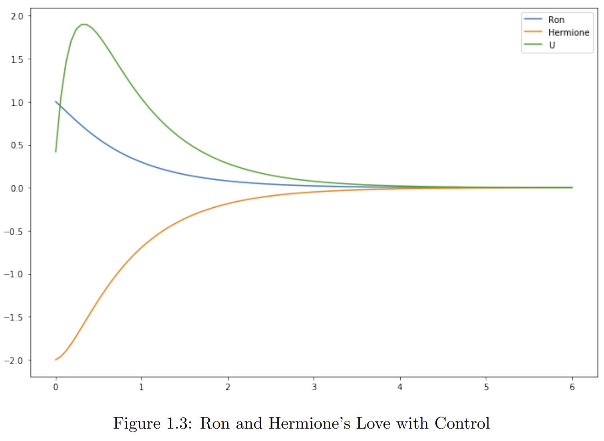
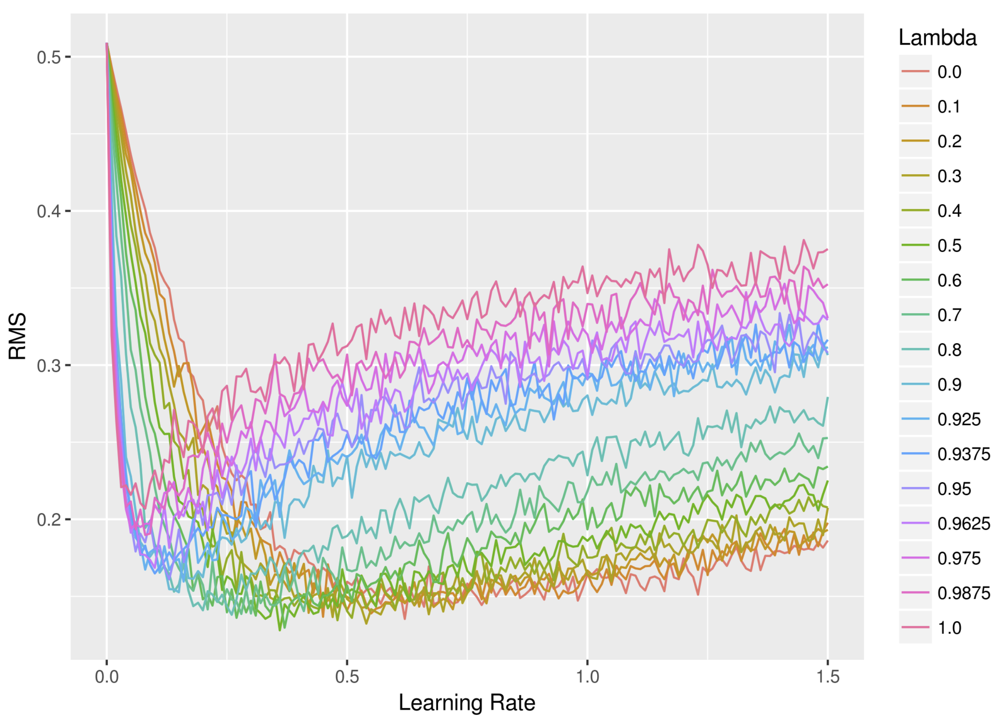
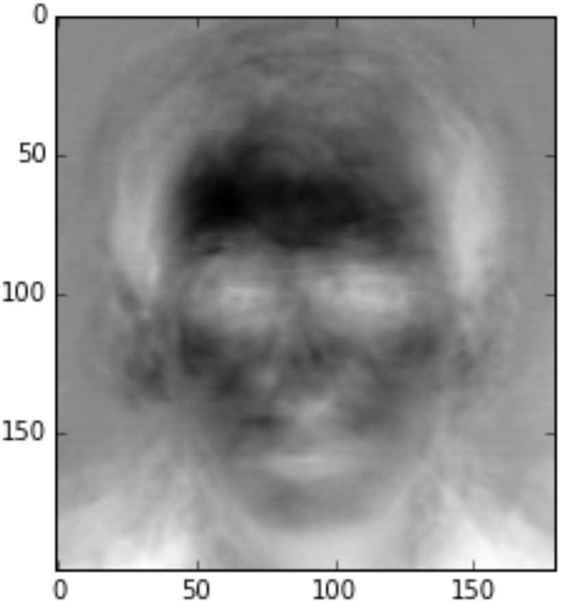
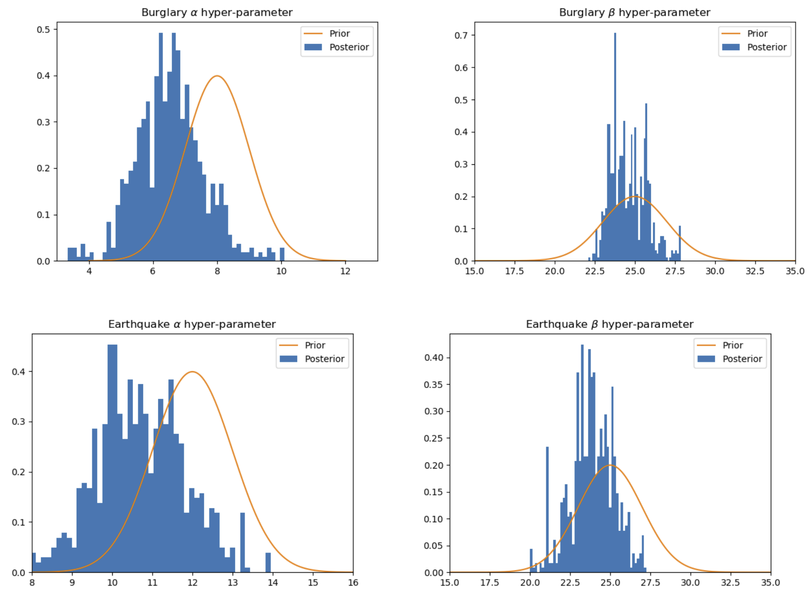
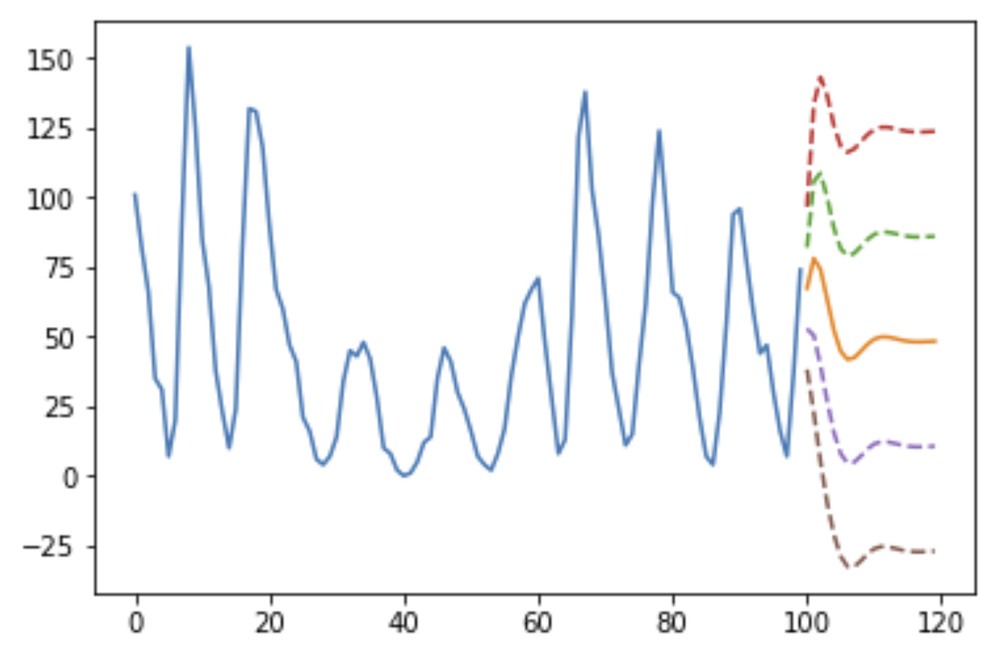

ML Projects
Armory is an open source framework for repeatable, scalable, and robust evaluations of ML defenses against adversarial attacks. While not a personal project, my contributions are significant.
 Github pageI built a simple system to help me find new recipes on Bon Appetit. After scraping and cleaning recipe data from the website, I created a basic nearest-neighbors model and a fancier collaborative filtering model to recommend likely dishes.
 View on githubFor my master's thesis I designed several versions of RL agents augmented with external read/write memory systems.
 Download pageI used Contrastive Predictive Coding to learn high-level features in Space Invaders, with the idea that pre-training an encoder could reduce the burden on an RL agent. This paper describes my implementation and an initial experiment in that direction.
 Read the original paperRead my report
Reinforcement learning meets tree search to learn a two-player game through self-play. We adapted the AlphaGo Zero algorithm to play the game Othello. Unfortunately our one GPU wasn't strong enough to train it fully.
 Read our writeup Long before Transformers, we built an RNN-based model to generate poetry,
focusing on meter, rhyme, and metaphor.
The following example compares student life to bondage:
Demeter, my love, poor scholar,
Thou shalt ever dance for thy dollar.
You’re a bond like a pudding-sick pauper,
While I—I am a professor!
Read the report
View on github
For a final project, we trained models to forecast game results in professional basketball.
We scraped historical and daily data, generated features including Elo scores, and trained with every
ML algorithm in the book to see which would give the best accuracy. Our final accuracy was comparable
to that of FiveThirtyEight's NBA predictions.
Jump to the final report
Or read the algorithm page
We wrote a light-hearted lab assignment for applied math majors to implement
what they learned in class about solving optimal control problems with the linear-quadratic regulator (LQR).

We implemented True Online TD(λ), an improvement on classic TD(λ) that allows more frequent value updates.
We test it in two prediction and two control tasks.

Read the original paper
Read our report
A basic facial recognition system using eigenfaces.

Facial recognition notebook
I did a lot of MCMC for one class, including Metropolis-Hastings and Gibbs sampling, all from scratch.
Here is one report describing results of learning the hyperparameters in a Bayesian network.

Report
Kalman filter: I implemented a Kalman filter and used it to predict where a projectile will strike as well as it's point of origin, from noisy observations.
ARMA: I predicted the future of an arbitrary time series using a hand-coded ARMA model. (Scroll down for the cool graphs.)
